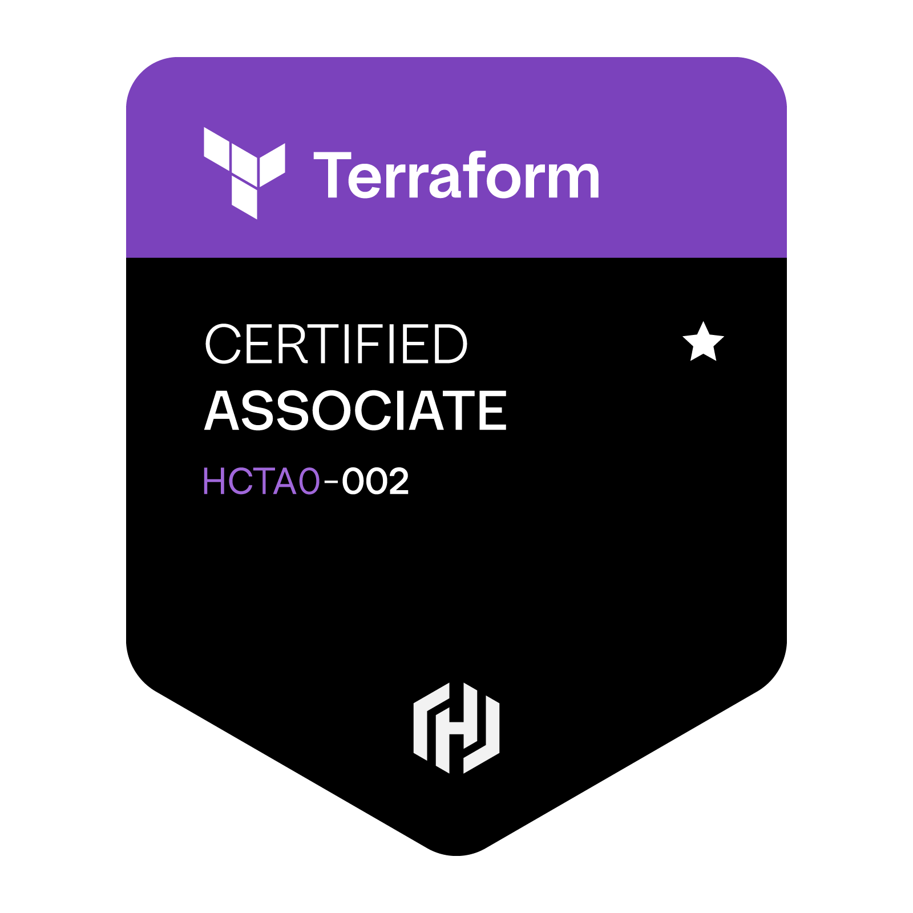

Credentials
Certifications



Platform Engineer
Platform Engineer specializing in Cloud / Distributed Systems, Kubernetes, Terraform, and production automation. Experienced in building scalable infrastructure, debugging mysterious production issues, and writing YAML files that hopefully behave on the first deployment.
About Me
My work spans cloud infrastructure, DevSecOps, and platform engineering, with a focus on AWS, Kubernetes, Terraform, CI/CD automation, observability, and infrastructure security. I build systems that integrate security into every stage of the deployment lifecycle, from code to production.
My contributions help improve system reliability, reduce security risks, and enable teams to deploy faster with confidence. The infrastructure I work on is designed to be secure by default, scalable by design, and production-ready in real-world environments.
Designing scalable, secure, and cost-optimized AWS infrastructure across multi-account environments.
Building and operating production EKS clusters with autoscaling, GitOps, and full observability.
Codifying infrastructure with Terraform and automating workflows with Python, Bash, and CI/CD pipelines.
Embedding security into the SDLC — from secrets management and IAM least-privilege to container scanning, runtime policies, and compliance guardrails in CI/CD pipelines.
Technical Skills
Credentials

Portfolio
End-to-end production-grade EKS infrastructure with multi-account AWS setup, autoscaling, and GitOps delivery.
Full-stack observability platform covering metrics, logs, and alerting for Kubernetes workloads.
Python-based automation framework for safe, zero-downtime EKS cluster version upgrades.
Policy enforcement and governance framework for multi-tenant Kubernetes clusters.
Standardized CI/CD pipelines for containerized microservices with automated testing and deployment.
Production WAF rule sets and ALB configurations for secure, highly available traffic routing.
Contact
Open to platform engineering roles, cloud architecture consulting, and DevOps collaboration.
📍 Open to remote opportunities worldwide